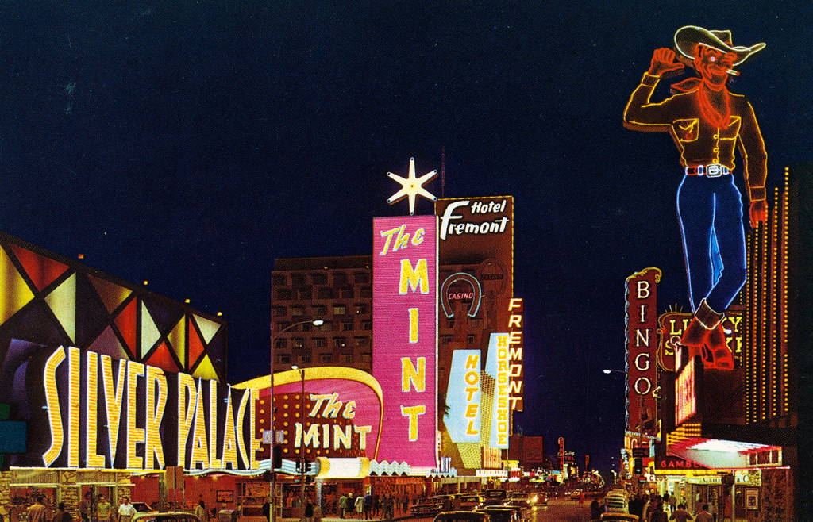

Tipus de successos.Successos Probabilístics.
Quan realitzem un experiment podem distingir entre tres tipus segons la capacitat de conèixer e resultat final del mateix:
- Experiments deterministes: quan coneguem les condicions inicials del mateix , el resultat final està fixat i en un principi el podem conèixer.Per exemple,si llancem una pedra cap amunt, sabem que tornarà cap avall.
- Experiments probabilístics:quan és impossible saber el què passarà encara que coneguem les condicions inicials.Per exemple, si llancem una moneda o un dau.

- Experiments quasi-probabilístics: són successos que só deterministes, però són tates variables que influixen que es impossible fixar el què va a ocòrrer. Per exemple,la física atmosfèrica que pronòstica el temps.
En aquesta unitat ens centrarem en els probabilístics.
Anotació
De moment estem recordant continguts ja treballats.
